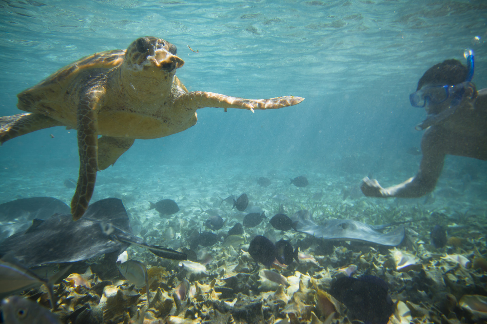
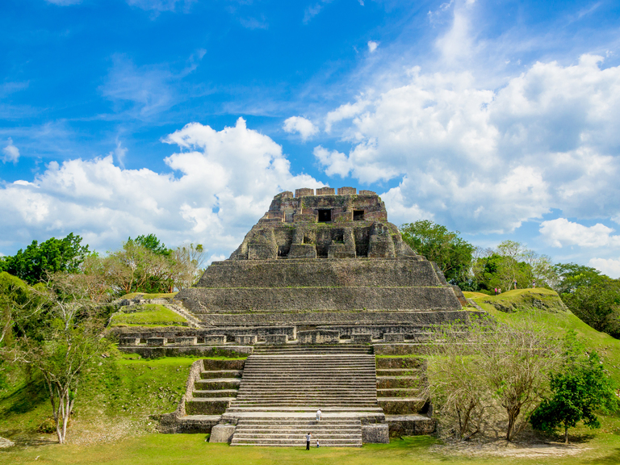

-
Try snorkeling
Lots of tourists go the snorkeling route when they get to Belize, but snorkeling is the cheaper way to go... with similar results.
Directions: There are lots of rental places on the beach, so take Beach Road all the way to the end and the boardwalk will give you many options.
-
Mayan ruins
Belize it or not (that's a pun), this country is home to some Mayan ruins, so don't forget to check out Xunantunich.
Directions: For ancient ruins, you don't have to go far. In fact, Xunantunich is 5km outside the city limits. Try Rte to get in from the south side, or Los Elias Turnpike to enter from the north (the preferred way).